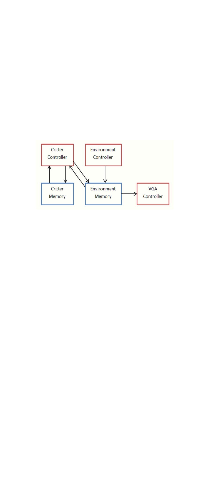
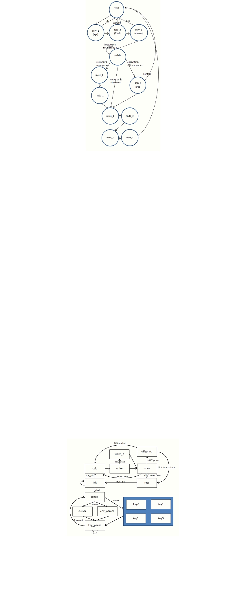
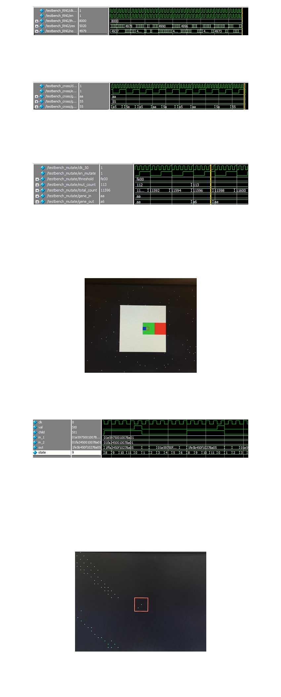

ECE 5760
Marshall Mucasey - msm294
Final Lab Report
Tae Jong (Eric) Jung - tj93
Evolution Game
1. Introduction
We designed a game where you get to play a god of small and simple world. The player
gets to adjust environmental parameters in our small 320x240 world, which in turn affects how
critters in the world evolve and interact with each other. Each location in the grid has it’s own
environmental parameters, and based on them, the critters eat, hunt, roam, mate, or die.
This game was originally intended to study the effects and progress of evolutionary
algorithms. Keeping to the spirit of the origin of EAs, we decided to build a nature-resembling
system where there are preys and predators, with few environmental parameters that can affect
things such as movement, food scarcity, disease rate, etc. The player, using on-board buttons
and switches, interacts through a cursor on the screen to change the environmental parameters
of a specific area. The world steps through and updates the critters on a low frequency clock,
although the actual calculation runs much faster.
2. High Level Design
One of the collaborator (Eric) has taken some courses in Evolutionary Algorithms and
thought it would be interesting to study how an algorithm mimicking a natural process behaves.
A lot of background math and proofs are required to guarantee that an evolutionary
algorithm solves a specific problem. However, we’re not really solving a problem; we’re merely
observing what happens to the population when environment changes. We do need to come up
with a good encoding of genomes and how to relate genetic with environmental factors.
H owever, there isn’t any real methods to obtaining this; rather, it is a design choice. We have
decided to use 4 environmental factors (water, vegetation, temperature, terrain) and 2 10-bit
genes for each individual
.
Figure 1. Systems Diagram
Systems diagram is shown in Figure 1. We have 2 memory blocks, one for critter and
one for environment. Environment memory also includes whether or not a critter is on that spot
or not, along with the type of the critter. VGA Controller uses the environmental parameters and
existence/type of critter to output correct color to the VGA screen. Environment Controller takes
cursor inputs and adjusts the environment accordingly, while Critter Controller updates each
critter and updates where each critter is to the environment memory.
Although similar projects can be done entirely on microcontrollers and the like, we chose
to do it almost entirely hardware based. Benefits of this included drastically lower usage of
memory as well as ability to parallelize a lot of computation. Benefits of using software-based
approach would be simpler code structure and versatility.
3. Implementation
a) Random Number Generator
We implemented a simple random number generator used in Lab 1. Although the intent
was to produce uniformly distributed drawing of 0’s and 1’s, but after some testing, it turns out
that we can use a portion of the actual random number and compare it to a threshold to get a
random binary decision weighted by probability.
After initially seeding, we keep shifting in an XOR of two bits to the random number, and
compare a select portion (16-bit) of the random number with input threshold and output whether
or not the segment has higher value than the threshold. We tested this module by simulating it
with multiple thresholds and confirming that fraction resulting from the simulation matched the
proportion we were inputting.
b) Environment Controller
We adapted our code from Lab 4 in creating and using a cursor on VGA screen. Once
we had a screen up with adjustable cursor, we moved on to implement an area-wise change to
the VGA memory buffer, which is same as environment memory. We changed our cursor logic
to become a state machine, and added a new state to write new values to a specified area with
location specified by cursor and size by switches.
Changing the cursor logic to state machine took some time, but it worked easily once it
was done. Testing was easily done through visually confirming that areas that we intended to
change did indeed change with cursor interaction.
c) VGA Controller
VGA Controller was developed in tandem with Environment Controller. We decided to
use 4 bits for each environmental parameters and 2 bits indicating existence and type of critter
on the spot, giving us total of 18 bits per pixel location. It turns out that 640x480 memory block
with 18 bit word was too much for DE2-115, so we had to downsize our world to 320x240.
If cursor mode is on, we draw the cursor over anything. If cursor mode is off but a critter
is on, we draw according to the type of the critter, with prey being green and predator blue.
Else, we scale each RGB value with terrain, vegetation, and water respectively, and scale the
intensity of the color with temperature. We used HEX display to show the 4 environmental
parameters getting set, so we can visually confirm that the colors match our expectations from
given environmental factors.
d) Critter Controller
Critter Controller is the centerpiece for calculation. This module takes 1 individual in a
population and performs all necessary steps for stepping through 1 simulation tick. Figure 2
shows the finite state machine of this module.

Figure 2. Finite State Machine of Critter Controller
This module was the hardest to design and implement, as most of the “interesting”
aspects of this project occur in it. We decided to implement this using simple iteration and finite
state machine. First, at reset, we wait for a start signal. Once received, the controller updates
the address of environment and critter to read and start the calculation.
First, we check for survivability, which is comprised of three aspects: age, food, and
disease. Each critter gains 1 age per simulation cycle, and dies if its over the max age, defined
by gene 2. Each critter loses some amount of food per simulation cycle, defined by gene 1.
Predators lose food at lower rate than preys. However, preys have a certain chance, dependent
on the environment, of gaining a set amount of food, determined by the RNG. Similarly, each
critter has low chance of getting a disease and dying, related to certain environmental factors
(water, vegetation, temperature) and inversely related to gene 2.
Once the critter survives all the survival checks, we start collision checks. If a critter
within range is found, we enter either mating or pvp state, depending on types of the two
interacting critters. If mating, we check if both critters haven’t mated recently and is also above
mating ag e (⅛ of max age), and perform crossovers. If pvp -ing, we compare gene 1,
representing camo for preys and eyesight for predators, of both critters, and whoever has higher
one either succeeds at hunting or evading the other. If no such critter is found or the critter
failed to interact, or after mating/pvp procedure, we move on to mutation. Important to note is
that when mating successfully happens, we leave the original parent alone and create a new
critter.
Mutation and movement is straight forward, with mutation slighting changing both genes
on a low chance, and chance of movement depending on critter’s hunger while range of
movement depending on the terrain of the environment. Once the controller is done with one
critter, either by proliferating or dying, it raises the valid flag and resets back to the reset state.
e) Integration
Once all the components were in, we integrated the entire system. Figure 3 shows the
finite state machine of the overall system. The system largely has two modes: cursor mode and
calculation mode, determined by the halt signal (switch 16).
If halt is on, we enter the cursor mode, in which we stop the simulation of the world and
updates the environmental parameters. Main state for this mode is pause, in which the FPGA
waits for button inputs to process. Environment controller is used here, as we process the
switch, and we debounce the press after by staying in key_pause state until all buttons are
released.
When halt is off, we enter calculation mode, in which we step through the simulation
according to run_clk using the critter controller. First, the critter controller is enabled in calc, and
we stay in calc until the critter controller raises valid flag, indicating that current critter is
processed. We then enter the write state, where we move the critter by deleting its former
position from environment memory. If newly updated critter is also alive, we enter write_n state,
where we input the new location. We then move on to done state, where we check if the newly
updated critter is an offspring. If so, we enter offspring state where we scan the critter memory
for an empty spot. From done state or offspring state, if we processed all critters, we return to
rest state, else we return to calc state with new critter address. We synchronized the updates
with slower run_clk by having rest only transition to init while run_clk is low, and init to calc while
run_clk is high.
.
Figure 3. Finite State Machine of Integrated Controller
4. Results
For preliminary testing, we isolated individual parts of the evolutionary system. We first
started with the random number generator module and created a ModelSim testbench to
analyze the frequency of high outputs for given threshold values. As shown below, with half of
the threshold maximum value, the RNG_decision module outputs roughly the same highs and
lows.

Figure 4. ModelSim RNG Module Results
We then simulated two modules that utilized the results from the RNG_decision module.
The first was a crossover module that ran with the same threshold as before. As shown below,
entire genes from parent genomes pass to the child genome during mating, and the crossover
module results in an even mix of child genome results with the given RNG threshold.
Figure 5. ModelSim Crossover Module Results
The second of these modules was the mutation module, which altered genes in a given
genome with a low probability. For this simulation, we chose to run the mutation at 1%
probability. In the testbench, we included metrics that counted the number of mutations as well
as the total number of mutation opportunities during the simulation. As shown below, the results
followed closely to the desired 1% probability.
Figure 6. ModelSim Mutation Module Results
Before we included these and other evolutionary functionalities in the top level module,
we tested the user-controlled portion of the design. As mentioned before, the user can pause
the simulation at any time in order to change parameters in selected regions of the environment
using an expandable cursor that can be moved with buttons and switches. Within the selected
region, the user could edit the four environment parameters, which were displayed on hex digits.
As shown below, this user control could be performed with critter simulation in the background.
In this version, critters were simply drawn randomly across the screen, but it shows that both
parts of the system could function simultaneously.
Figure 7. Environment with Edited Regions
Below is the result of critter controller for mating 2 critters. We can see that crossover
does happen in this specific section, as output gene is different and child flag is on. Overall,
we’ve tested individual critter interactions as well as against a smaller list, and they all simulated
according to expectations.
Figure 8. ModelSim Critter Controller Module Results
Unfortunately, we were unable to get the full evolutionary design to function properly.
Though we were able to show that specific evolutionary modules worked properly, we were
unable to integrate them into a larger module that would iterate over the entire list of critters,
determining changes in each genome and outputting the result to the environment VGA buffer.
There were a number of issues. The biggest problem was that we had two different structure to
use for VGA, one for environment and one for critter. Our effort into integrating the results from
critter controller to environment memory was imperfect, leading to visually noticeable issue of
the system not erasing previous critter locations after a critter has moved. In addition, the critter
movement behaved sporadically, setting multiple locations with a single move. These two errors
can be seen below. The displayed critter colors corresponded correctly with the critter type, but
the overall evolution did not work correctly.
Figure 9. Sporadic Critter Movement During Full Simulation
5. Conclusion
While certain individual modules in the design operated correctly in isolated simulation,
the overall integrated design did not execute correctly. The main errors in the functionality were
caused in the top-level state machine, where data was being passed between the critter
controller, the critter memory, and the environment VGA buffer. Even though the critter control
module worked correctly in an isolated testbench, its results were not read back properly into
the two memories. In fact, the state machine would only ever perform calculations on the first
location in the critter memory. In a redesign, we would reassess how the state machine reads
data from each location.
Our design was built off a top-level module provided by Bruce Land in one of the labs
this semester. We modified the setup to work correctly with a DE2-115 board and then
implemented our design. This given top-level module included a VGA buffer module that utilized
the Altera altsyncram. We modified this buffer to the correct sizes and word lengths of the
environment memory and critter memory using the MegaWizard plug-in within Quartus. For our
design, we did not reverse-engineer any existing designs and did not have to sign any non-
disclosures to acquire any hardware, so there were no patent or trademark issues that needed
to be addressed. There are likely no patent opportunities or FCC regulations that apply to our
design. It is merely a simulation tool with little practical use and marketability.
6. Appendix A - Code
7. Appendix B - Work Distribution
a) Marshall Mucasey
i)
Random Number Generator
ii)
Environmental Controller
iii)
VGA Controller
b) Eric T. Jung
i)
Environmental Controller
ii)
Critter Controller
iii)
Integration